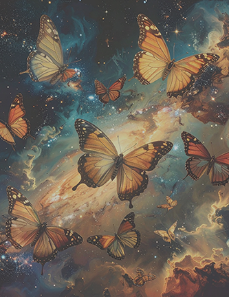

VINTAGE THEMED GIFTS FOR BIBLIOPHILES

At The Book Lover Cute Gifts, we believe every reader deserves a little extra magic between the pages. Our shop is a cozy haven designed for book lovers, filled with charming, literary-inspired treasures that celebrate the timeless joy of storytelling. From unique vintage bookmarks, notepads to sticky notes, calendars, stickers, and beautifully scented bookish candles, each item is thoughtfully chosen with care and a deep love for the written word. Whether you’re treating yourself or searching for the perfect gift for a fellow reader, our mission is to keep the love of books alive—one meaningful and memorable item at a time. We specialize in vintage-themed gifts created for those who truly cherish books. Our collection captures the essence of old-world charm, rich literary nostalgia, and soft, cozy details that feel as though they were discovered in a forgotten library. We want to bring warmth and inspiration to your reading experience. In addition, we offer personalized gift recommendations, customized bundles, and beautifully crafted vintage-style gift wrapping to make every purchase feel extra special. Whether you are celebrating a lifelong reader or marking a meaningful occasion, we are here to help you turn a passion for books into a thoughtful, lasting gift.